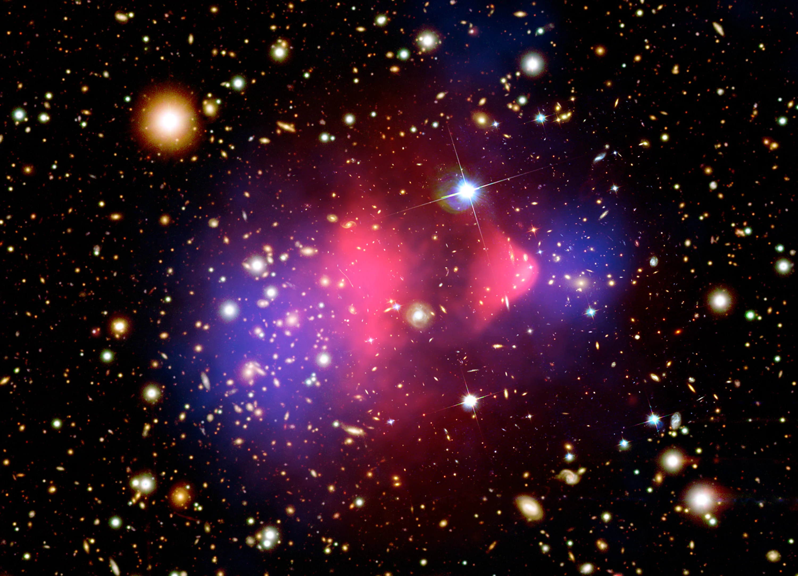

My research focuses on understanding the dynamics of certain types of gravitational systems called collisional systems. These include certain types of dark matter systems and star clusters.
Currently, I use analytic and N-body computational models to study dark matter halo evolution, SIDM core collapse, and mass segregation in stellar systems.

We have strong observational evidence to suggest that the main component of matter in the Universe, and the one most critical for structure formation, is dark matter. While its ontology is still unknown, many of its properties are well-constrained by studying its behavior through both cosmological computer simulations and astronomical observations. For example, we know that it does not interact with light (hence "dark") and is relatively slow moving ("cold"). I try to better understand the dynamics of large collections of dark matter known as dark matter halos, which house galaxies and galaxy clusters.
Core Collapse of SIDM Halos (van den Bosch & Tokayer (2026))
In the standard picture, dark matter particles pass through one another almost without interacting. In self-interacting dark matter (SIDM) models, they can scatter off one another and exchange energy. This can eventually cause a halo's center to lose heat to its surroundings, shrink, and become hotter and denser. This process is called core collapse.
I am currently studying the timescales of SIDM core-collapse under various conditions using an analytical framework that models SIDM as a heat-conducting fluid. I have built a complete Python module (pygtfcode) to easily and efficiently run these simulations. An animation of one is shown below.
In van den Bosch & Tokayer (2026), we compared fluid calculations with particle simulations and improved the model's description of heat flow. We found that the late stages of collapse slow down substantially. This makes it harder for SIDM collapse alone to explain the massive black holes seen in the early Universe.
In a follow-up paper in preparation, we further explore SIDM evolution with our gravothermal fluid calculations, including what happens deep into core collapse. You can explore how halo properties and interaction strengths affect this evolution with the SIDM core-collapse emulator.
Multi-Component Star Clusters (Tokayer, van den Bosch, and Errani (in prep.))
It turns out this same gravothermal fluid model can be used to simulate mass segregation in certain astrophysical systems, whereby more massive species of matter sink toward the center while the lighter species diffuse outward. I have extended pygtfcode to simulate these multi-component systems in MultiGTF, in which we model both the evolution of the entire halo, as well as that of the individual species.
Beyond mass segregation, MultiGTF follows the long-term, or secular, evolution of star clusters as their stars exchange energy through gravitational encounters. We can study how the cluster contracts, expands, or undergoes core collapse, while following the different stellar populations within it.
My paper describing MultiGTF and its applications has been submitted to The Astrophysical Journal. Alongside star clusters, we also study how stars redistribute themselves when they are embedded in a surrounding dark matter halo. Raphaël Errani, at Tel Aviv University, contributed to this work.
Gravitational Lensing by Collapsing SIDM Halos (van den Bosch & Tokayer (2026))
Gravity bends light, so a dark matter halo can act as a lens that magnifies and distorts galaxies behind it. It might seem that a halo should become an ever stronger lens as its center grows denser during core collapse. But density alone does not tell the whole story.
We follow how lensing changes as SIDM halos evolve. We find that lensing can strengthen during early collapse, then weaken again even as the central density continues to rise: the dense inner core is shrinking and losing mass. This means that the full distribution of matter, and the stage of collapse, matter when using gravitational lenses to test SIDM. The paper is available on arXiv and has been submitted to Monthly Notices of the Royal Astronomical Society.
Internal Structure of CDM Halos
A robust prediction of CDM is that dark matter halos follow a universal density profile—typically a double power law—characterized by a concentration, which measures the extent of the inner profile relative to the size of the halo. Much work has mapped these universal profiles to a ”two-phase accretion history,” where an inner core is established during early growth, while the concentration is set by later stages of slow growth. Despite this framework, key questions about how halos assemble and evolve remain open.
To address these questions, I use idealized N-body simulations to study the controlled growth of CDM halos. By comparing the simulated results with predictions from an analytical energy diffusion model—which captures the halo's dynamical response to sudden changes—I aim to clarify how structure emerges from growth history. This work is being done in close collaboration with Zhaozhou Li.
CDM halos and GGSL (Tokayer et al. (2024))
In clusters of galaxies, the immense gravity can bend light from more distant galaxies behind them, a phenomenon known as strong lensing. Some of these lensing events are caused not by the whole cluster, but by individual dark matter subhalos—clumps of dark matter around individual galaxies. It has been found that the number of observed GGSL events is ten times higher than is predicted by the standard CDM paradigm.
We asked: could this discrepancy be resolved by redistrbuting how mass is distributed inside the small dark matter clumps, while still remaining consistent with CDM? We tried concentrating the mass more tightly (a “cuspy” profile) or spreading it out (a “cored” profile), and we accounted for the effects of luminous matter (stars and gas) pulling dark matter inward. None of these changes were able to reproduce the high number of GGSL events seen in the real clusters, furthering the potential inconsistency in our models of how dark matter behaves on small scales. This could be a sign that we need to consider alternative dark matter theories.
This work was done in collaboration with Isaque Dutra and was supervised by Priyamvada Natarajan. The results are presented in Tokayer et al. (2024).
Obscuration Bias in X-ray AGN surveys (Tokayer et al. (2025))
Active galactic nuclei (AGN)—actively accreting supermassive black holes at the centers of galaxies—are known for their bright X-ray emission, but obscuring clouds of gas and dust can block this radiation, resulting in "obscured AGN." Obscured AGN can be nearly invisible to X-ray telescopes like Chandra. This study tried to understand how many AGN go undetected missing due to obscuration and how accurately we characterizing the ones we do detect.
We used realistic models of nearby AGN from the BAT AGN Spectroscopic Survey (BASS), which includes over 1,000 AGN whose X-ray spectra are minimally affected by obscuration. We simulated how these AGN would appear if they were located at high redshift and observed with the Chandra telescope. We found that Chandra failed to detect the majority of obscured AGN in our simulations. When a detection was made, spectral fits were prone to overestimating the obscuration, potentially exaggerating the effect of AGN being more heavily obscured at higher redshift. This bias has implications for how we understand the growth of black holes over cosmic time.This work was done under the supervision of Michael Koss and Meg Urry, and the results are presented in Tokayer et al. (2025).
HESS J0632+057 Light Curve (Tokayer et al. (2021))
HESS J0632+057 is one of only 6 known galactic gamma ray binaries. Each of these systems consists of a main sequence O or B star and a compact object. While HESS J0632+057 has been studied extensively in X-rays, much remains to be uncovered about the source. It exhibits a unique double-peaked high energy light curve, which (until this study) had not been quantitatively explained, even while qualitative models had been proposed. A unique orbital solution has also not been found. This work uses the entire archive of Swift-XRT data dating back to 2009, as well as observations by NuSTAR (hard X-rays), VERITAS (gamma rays), and MDM (optical), to probe a novel explanation of the double-peaked light curve, and a corresponding orbital solution.
Our light curve model accounts for 3 features of the system: (1) B-field modulation: As the pulsar gets closer and farther from the Be star, the B field at the intra-binary shock modulates, due to changing distance from the pulsar. A higher B-field results in more X-ray emission. (2) Beaming: Particles accelerate along the intra-binary shock, which wraps around the pulsar, creating a beaming effect when the pulsar passes the line of sight from Earth. (3) Disk passage: When the pulsar passes through the circumstellar disk, there is increased flux. This part of the model is phenomenological, and may be due to an increase in the particle density or an increase in the B-field.
This work was done at Columbia Astrophysics Laboratory under the supervision of Chuck Hailey and Kaya Mori. The results are presented in Tokayer et al. (2021).
I am a founder and organizer of the History and Foundations of Physics reading group at Yale University. The reading group is a forum that brings together faculty, postdocs, graduate students, and undergraduates from both sciences and humanities approximately once a month to discuss contemporary ideas in the history, philosophy, and sociology of physics, as well as foundational texts.